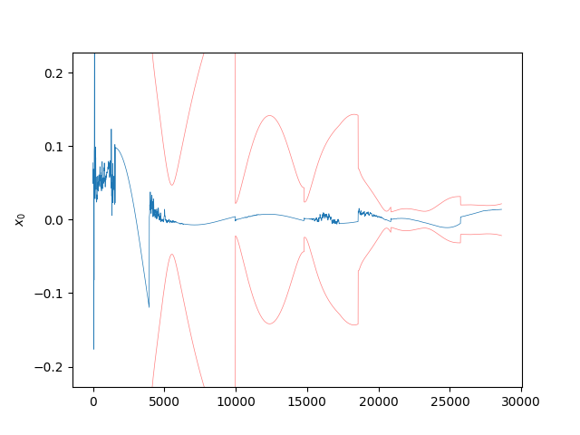
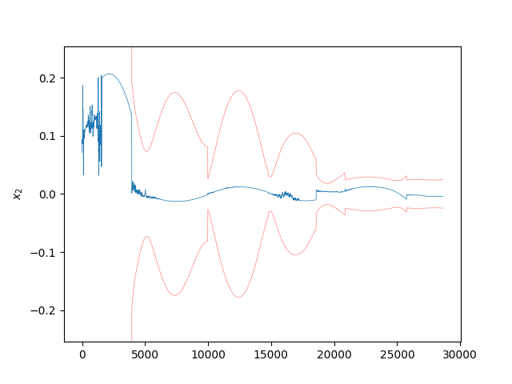
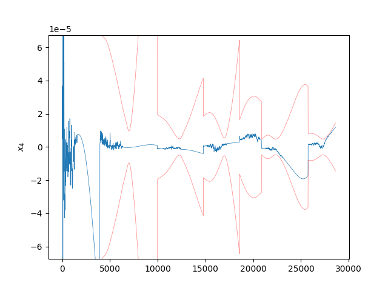
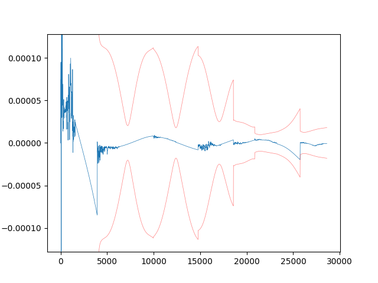
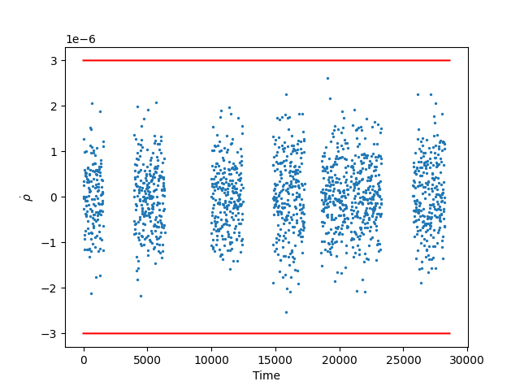

Note
Click here to download the full example code
Kalman Filter with Stochastic Noise Compensation Example
- 

- 

- 
- 

- 
Progress: 0%| | 0/2862 [00:00<?, ?it/s]
Progress: 0%| | 1/2862 [00:03<2:32:51, 3.21s/it]
Progress: 1%| | 23/2862 [00:03<04:53, 9.68it/s]
Progress: 2%|1 | 45/2862 [00:03<02:09, 21.74it/s]
Progress: 2%|2 | 67/2862 [00:03<01:16, 36.71it/s]
Progress: 3%|3 | 90/2862 [00:03<00:50, 55.40it/s]
Progress: 4%|3 | 112/2862 [00:03<00:36, 75.32it/s]
Progress: 5%|4 | 137/2862 [00:03<00:27, 100.79it/s]
Progress: 6%|5 | 161/2862 [00:03<00:21, 124.97it/s]
Progress: 6%|6 | 186/2862 [00:04<00:17, 149.01it/s]
Progress: 7%|7 | 212/2862 [00:04<00:15, 172.15it/s]
Progress: 8%|8 | 236/2862 [00:04<00:13, 187.80it/s]
Progress: 9%|9 | 260/2862 [00:04<00:13, 199.41it/s]
Progress: 10%|9 | 284/2862 [00:04<00:12, 208.14it/s]
Progress: 11%|# | 308/2862 [00:04<00:11, 214.20it/s]
Progress: 12%|#1 | 332/2862 [00:04<00:11, 219.36it/s]
Progress: 12%|#2 | 356/2862 [00:04<00:11, 222.99it/s]
Progress: 13%|#3 | 380/2862 [00:04<00:10, 225.68it/s]
Progress: 14%|#4 | 404/2862 [00:04<00:10, 226.33it/s]
Progress: 15%|#4 | 428/2862 [00:05<00:10, 224.92it/s]
Progress: 16%|#5 | 451/2862 [00:05<00:11, 219.02it/s]
Progress: 17%|#6 | 474/2862 [00:05<00:10, 218.08it/s]
Progress: 17%|#7 | 497/2862 [00:05<00:10, 219.94it/s]
Progress: 18%|#8 | 520/2862 [00:05<00:10, 218.39it/s]
Progress: 19%|#8 | 543/2862 [00:05<00:10, 219.04it/s]
Progress: 20%|#9 | 566/2862 [00:05<00:10, 221.02it/s]
Progress: 21%|## | 590/2862 [00:05<00:10, 225.16it/s]
Progress: 21%|##1 | 613/2862 [00:05<00:10, 224.38it/s]
Progress: 22%|##2 | 637/2862 [00:06<00:09, 227.15it/s]
Progress: 23%|##3 | 665/2862 [00:06<00:09, 240.15it/s]
Progress: 24%|##4 | 692/2862 [00:06<00:08, 247.32it/s]
Progress: 25%|##5 | 717/2862 [00:06<00:08, 247.02it/s]
Progress: 26%|##5 | 742/2862 [00:06<00:08, 242.70it/s]
Progress: 27%|##6 | 767/2862 [00:06<00:08, 240.53it/s]
Progress: 28%|##7 | 792/2862 [00:06<00:08, 239.25it/s]
Progress: 29%|##8 | 816/2862 [00:06<00:08, 233.79it/s]
Progress: 29%|##9 | 840/2862 [00:06<00:08, 234.13it/s]
Progress: 30%|### | 864/2862 [00:06<00:08, 234.78it/s]
Progress: 31%|###1 | 888/2862 [00:07<00:08, 227.73it/s]
Progress: 32%|###1 | 912/2862 [00:07<00:08, 228.74it/s]
Progress: 33%|###2 | 935/2862 [00:07<00:08, 221.62it/s]
Progress: 33%|###3 | 958/2862 [00:07<00:08, 222.74it/s]
Progress: 34%|###4 | 982/2862 [00:07<00:08, 225.32it/s]
Progress: 35%|###5 | 1005/2862 [00:07<00:08, 225.61it/s]
Progress: 36%|###5 | 1028/2862 [00:07<00:08, 224.06it/s]
Progress: 37%|###6 | 1051/2862 [00:07<00:08, 222.20it/s]
Progress: 38%|###7 | 1074/2862 [00:07<00:08, 215.35it/s]
Progress: 38%|###8 | 1096/2862 [00:08<00:08, 213.25it/s]
Progress: 39%|###9 | 1118/2862 [00:08<00:08, 214.70it/s]
Progress: 40%|###9 | 1142/2862 [00:08<00:07, 221.84it/s]
Progress: 41%|#### | 1167/2862 [00:08<00:07, 228.43it/s]
Progress: 42%|####1 | 1192/2862 [00:08<00:07, 231.75it/s]
Progress: 42%|####2 | 1216/2862 [00:08<00:07, 229.48it/s]
Progress: 43%|####3 | 1239/2862 [00:08<00:07, 225.28it/s]
Progress: 44%|####4 | 1262/2862 [00:08<00:07, 226.21it/s]
Progress: 45%|####4 | 1286/2862 [00:08<00:06, 228.96it/s]
Progress: 46%|####5 | 1309/2862 [00:08<00:06, 229.17it/s]
Progress: 47%|####6 | 1333/2862 [00:09<00:06, 230.33it/s]
Progress: 47%|####7 | 1357/2862 [00:09<00:06, 230.84it/s]
Progress: 48%|####8 | 1381/2862 [00:09<00:06, 231.14it/s]
Progress: 49%|####9 | 1405/2862 [00:09<00:06, 224.77it/s]
Progress: 50%|####9 | 1430/2862 [00:09<00:06, 229.50it/s]
Progress: 51%|##### | 1455/2862 [00:09<00:06, 232.98it/s]
Progress: 52%|#####1 | 1480/2862 [00:09<00:05, 235.09it/s]
Progress: 53%|#####2 | 1504/2862 [00:09<00:05, 231.50it/s]
Progress: 53%|#####3 | 1528/2862 [00:09<00:05, 229.15it/s]
Progress: 54%|#####4 | 1551/2862 [00:09<00:05, 228.62it/s]
Progress: 55%|#####4 | 1574/2862 [00:10<00:05, 226.40it/s]
Progress: 56%|#####5 | 1597/2862 [00:10<00:05, 226.48it/s]
Progress: 57%|#####6 | 1621/2862 [00:10<00:05, 229.86it/s]
Progress: 58%|#####7 | 1646/2862 [00:10<00:05, 234.06it/s]
Progress: 58%|#####8 | 1670/2862 [00:10<00:05, 233.86it/s]
Progress: 59%|#####9 | 1695/2862 [00:10<00:04, 238.35it/s]
Progress: 60%|###### | 1719/2862 [00:10<00:04, 235.12it/s]
Progress: 61%|###### | 1743/2862 [00:10<00:04, 234.86it/s]
Progress: 62%|######1 | 1767/2862 [00:10<00:04, 235.56it/s]
Progress: 63%|######2 | 1791/2862 [00:11<00:04, 236.66it/s]
Progress: 63%|######3 | 1815/2862 [00:11<00:04, 234.85it/s]
Progress: 64%|######4 | 1839/2862 [00:11<00:04, 235.09it/s]
Progress: 65%|######5 | 1863/2862 [00:11<00:04, 233.55it/s]
Progress: 66%|######5 | 1887/2862 [00:11<00:04, 228.45it/s]
Progress: 67%|######6 | 1910/2862 [00:11<00:04, 225.06it/s]
Progress: 68%|######7 | 1933/2862 [00:11<00:04, 222.46it/s]
Progress: 68%|######8 | 1956/2862 [00:11<00:04, 221.67it/s]
Progress: 69%|######9 | 1979/2862 [00:11<00:03, 222.00it/s]
Progress: 70%|######9 | 2002/2862 [00:11<00:03, 220.71it/s]
Progress: 71%|####### | 2025/2862 [00:12<00:03, 212.45it/s]
Progress: 72%|#######1 | 2048/2862 [00:12<00:03, 215.26it/s]
Progress: 72%|#######2 | 2071/2862 [00:12<00:03, 218.18it/s]
Progress: 73%|#######3 | 2095/2862 [00:12<00:03, 222.08it/s]
Progress: 74%|#######4 | 2118/2862 [00:12<00:03, 223.16it/s]
Progress: 75%|#######4 | 2143/2862 [00:12<00:03, 228.68it/s]
Progress: 76%|#######5 | 2168/2862 [00:12<00:02, 233.03it/s]
Progress: 77%|#######6 | 2192/2862 [00:12<00:02, 234.47it/s]
Progress: 77%|#######7 | 2216/2862 [00:12<00:02, 229.39it/s]
Progress: 78%|#######8 | 2239/2862 [00:13<00:02, 223.78it/s]
Progress: 79%|#######9 | 2262/2862 [00:13<00:02, 212.55it/s]
Progress: 80%|#######9 | 2285/2862 [00:13<00:02, 214.90it/s]
Progress: 81%|######## | 2308/2862 [00:13<00:02, 216.78it/s]
Progress: 81%|########1 | 2331/2862 [00:13<00:02, 218.01it/s]
Progress: 82%|########2 | 2353/2862 [00:13<00:02, 217.31it/s]
Progress: 83%|########2 | 2375/2862 [00:13<00:02, 216.54it/s]
Progress: 84%|########3 | 2399/2862 [00:13<00:02, 220.88it/s]
Progress: 85%|########4 | 2423/2862 [00:13<00:01, 225.37it/s]
Progress: 85%|########5 | 2446/2862 [00:13<00:01, 226.41it/s]
Progress: 86%|########6 | 2470/2862 [00:14<00:01, 227.96it/s]
Progress: 87%|########7 | 2494/2862 [00:14<00:01, 228.93it/s]
Progress: 88%|########7 | 2518/2862 [00:14<00:01, 229.88it/s]
Progress: 89%|########8 | 2541/2862 [00:14<00:01, 229.17it/s]
Progress: 90%|########9 | 2564/2862 [00:14<00:01, 229.31it/s]
Progress: 90%|######### | 2587/2862 [00:14<00:01, 228.15it/s]
Progress: 91%|#########1| 2610/2862 [00:14<00:01, 226.28it/s]
Progress: 92%|#########2| 2635/2862 [00:14<00:00, 230.86it/s]
Progress: 93%|#########2| 2660/2862 [00:14<00:00, 234.87it/s]
Progress: 94%|#########3| 2684/2862 [00:14<00:00, 228.75it/s]
Progress: 95%|#########4| 2707/2862 [00:15<00:00, 218.64it/s]
Progress: 95%|#########5| 2730/2862 [00:15<00:00, 219.38it/s]
Progress: 96%|#########6| 2753/2862 [00:15<00:00, 218.19it/s]
Progress: 97%|#########6| 2775/2862 [00:15<00:00, 217.18it/s]
Progress: 98%|#########7| 2797/2862 [00:15<00:00, 217.97it/s]
Progress: 98%|#########8| 2819/2862 [00:15<00:00, 216.69it/s]
Progress: 99%|#########9| 2841/2862 [00:15<00:00, 214.46it/s]
Progress: 100%|##########| 2862/2862 [00:15<00:00, 181.03it/s]
Time Elapsed: 15.811890125274658
7 8 9 10 11 12 13 14 15 16 17 18 19 20 21 22 23 24 25 26 27 28 29 30 31 32 33 34 35 36 37 38 39 40 41 42 43 44 45 46 47 48 49 50 51 52 53 54 55 56 57 58 59 60 61 62 63 64 65 66 67 68 69 70 71 72 73 74 75 76 77 78 79 80 81 82 83 84 85 86 87 88 89 90 91 92 93 94 95 96 97 98 99 100 101 | import time
import pickle
import numpy as np
import matplotlib.pyplot as plt
import StatOD
from StatOD.data import get_measurements
from StatOD.dynamics import dynamics, f_J2, get_Q, process_noise
from StatOD.filters import FilterLogger, KalmanFilter
from StatOD.measurements import h_rho_rhod, measurements
from StatOD.visualizations import *
from StatOD.constants import *
def main():
ep = EarthParams()
cart_state = np.array([-3515.4903270335103, 8390.716310243395, 4127.627352553683,
-4.357676322178153, -3.3565791387645487, 3.111892927869902])
t, Y, X_stations_ECI = get_measurements("Data/Measurements/range_rangerate_w_J2_w_noise.data")
# Decrease scenario length
M_end = len(t) // 5
t = t[:M_end]
Y = Y[:M_end]
# Initialize state and filter parameters
dx0 = np.array([0.1, 0.0, 0.0, 1E-4, 0.0, 0.0])
x0 = cart_state + dx0
P_diag = np.array([1, 1, 1, 1E-3, 1E-3, 1E-3])**2
R_diag = np.array([1E-3, 1E-6])**2
P0 = np.diag(P_diag)
R0 = np.diag(R_diag)
t0 = 0.0
# Initialize Process Noise
Q0 = np.eye(3) * 1e-7 ** 2
Q_args = []
Q_fcn = process_noise(x0, Q0, get_Q, Q_args, use_numba=False)
# Initialize Dynamics and Measurements
f_args = np.array([ep.R, ep.mu, ep.J2])
f, dfdx = dynamics(x0, f_J2, f_args)
f_dict = {
"f": f,
"dfdx": dfdx,
"f_args": f_args,
"Q_fcn": Q_fcn,
"Q": Q0,
"Q_args": Q_args,
}
h_args = X_stations_ECI[0]
h, dhdx = measurements(x0, h_rho_rhod, h_args)
h_dict = {'h': h, 'dhdx': dhdx, 'h_args': h_args}
#########################
# Generate f/h_args_vec #
#########################
f_args_vec = np.full((len(t), len(f_args)), f_args)
h_args_vec = X_stations_ECI
R_vec = np.repeat(np.array([R0]), len(t), axis=0)
##############
# Run Filter #
##############
start_time = time.time()
logger = FilterLogger(len(x0), len(t))
filter = KalmanFilter(t0, x0, dx0, P0, f_dict, h_dict, logger=logger)
filter.run(t, Y[:,1:], R_vec, f_args_vec, h_args_vec)
print("Time Elapsed: " + str(time.time() - start_time))
##################################
# Gather measurement predictions #
##################################
package_dir = os.path.dirname(StatOD.__file__) + "/../"
with open(package_dir + 'Data/Trajectories/trajectory_J2.data', 'rb') as f:
traj_data = pickle.load(f)
x_truth = traj_data['X'][:M_end]
y_hat_vec = np.zeros((len(t), 2))
for i in range(len(t)):
y_hat_vec[i] = filter.predict_measurement(logger.x_i[i], logger.dx_i_plus[i], h_args_vec[i])
directory = "Plots/" + filter.__class__.__name__ + "/"
y_labels = np.array([r'$\rho$', r'$\dot{\rho}$'])
vis = VisualizationBase(logger, directory, False)
vis.plot_state_errors(x_truth)
vis.plot_residuals(Y[:,1:], y_hat_vec, R_vec, y_labels)
plt.show()
if __name__ == "__main__":
main()
|
Total running time of the script: ( 0 minutes 23.575 seconds)